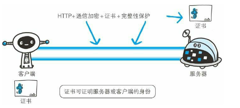
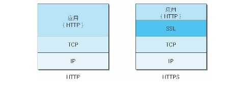
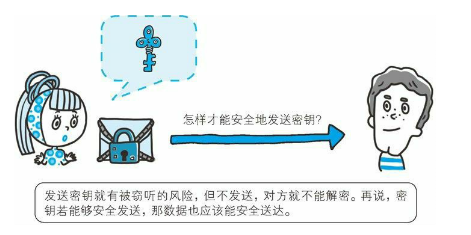
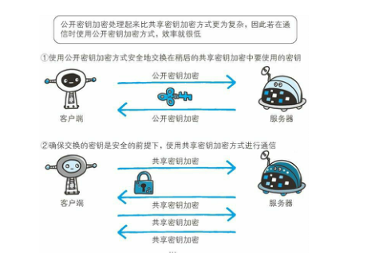
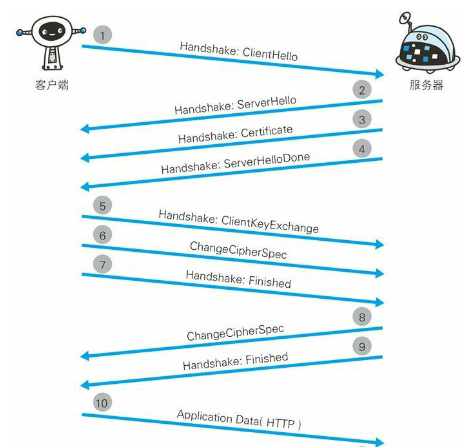
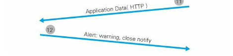

HTTPS
前言
我们在享受互联网给我们带来的便利的同时也承受了互联网带来的伤害，比如上网的时候经常会遇到密码被盗，信息泄露等令人郁闷的事情。其中有一个原因为：互联网早期绝大部分网站使用的是HTTP协议，我们在http协议下输入的任何信息都是不加密的。简单来说，这些密码以及个人隐私信息全都一字一句在网络传输中“裸奔”。
虽然http协议本身简单而且方便使用，但也存在一些安全性上不足，比如：
- 通信使用明文（不加密），内容很可能被窃听
- 不验证通信双方的身份，通信对象很可能被伪装
- 无法证明报文的完整性，通信内容很可能被修改
其实这类问题，不仅仅会出现在http协议中，所有本身不涉及加密的协议都存在这些安全性的不足。
所谓互联网，是由能连通到全世界的网络组成的。无论哪个地方的服务器与客户端通信时，在通信线路上会经过很多网络设备，你无法保证这些设备的安全性，这些“坏蜀黍”就很有可能会泄露或者攥改你的通信内容，甚至伪装起来，而且你根本无法辨别。
但是不要慌，你可以发现我们现在浏览的大部分网页都是https开头的，也就是说它们已经升级为了https协议了。https到底是什么玩意呢？
什么是HTTPS协议呢？
HTTPS（HTTP Secure）并非是一种新的协议，简单来说，https就是给http加了一个“安全套”，即使别人拿到了信息，也不知道里面到底是个什么。这个外加的“安全套”叫做SSL（Secure Socket Layer），所谓的HTTPS，其实也就是身披SSL协议这层外壳的HTTP罢了。

而且，SSL是独立HTTP的协议，采用了SSL之后，HTTP就拥有了加密，证书和完整性保护这些功能了。

两种加密方式
在讲SSL之前，先简单了解一下加密的知识。总体来说，加密分为2大类，对称密钥加密，非对称密钥加密。
加密和解密同用一个密钥的方式称为共享密钥加密（Common key crypto system），也就是我们所说的对称加密。
举个例子，客户想发送“12345”给服务器，又不想明文发送，于是他就用了一个简单的加密算法，不直接发送“12345”转而发送“do re mi fa so”给服务器。服务器一看，由于事先已经和客户商量好了，知道了客户是用音符加密，于是就同样的原理解密“do re mi fa so”得到“12345”。这个过程就是对称密钥加密，当然在实际运用过程中，加密解密算法肯定不会这么简单的。
这里有一个bug，我们如何将对称的密钥安全地传递给通信方呢？假设我使用了一种对称加密算法加密了通信报文，同时我希望将解密的密钥给对方，否则对方就无法解密报文。但是从现在来看我们没有办法保证把密钥传递给对方的通信的安全性。我们在互联网上转发密钥时，如果通信被监听那么密钥就会泄露，同时也就失去了加密的意义。
在上面的例子来看，客户端和服务器要事先商量好对称密钥，也就是使用音符来加密，但如果这个商量的过程是无法加密的，有可能被坏人监听泄露，那么后续的加密也就没有作用了。

那么，如果解决上面的问题呢？
答案就是使用两把密钥的公开密钥加密。
公开密钥加密使用一对非对称的密钥。一把叫做私有密钥，另一把叫做公开密钥。顾名思义，私有密钥不能让其他人知道，而公开密钥则可以随意发布。具体非对称密钥是如何操作的呢？
再举个例子，假设A想B发送一个报文，使用非对称密钥加密。那么，A首先去B的主页（qq空间朋友圈或者微博啥的）找到B发布的公开密钥，然后用B发布的公开密钥加密将要发送的报文信息。B在得到了使用自己的公开密钥加密的报文后，使用B的的私有密钥来解密报文就可以得到原文了。
这种加密和解密使用不同的密钥的方式就是非对称加密，利用这种方式，不需要发送用来解密的私有密钥，也就不必担心密钥被其他坏人窃听。
HTTPS的安全通信机制
HTTPS使用的是两种加密并用的混合加密机制。你可能会有个疑问，为什么不只使用非对称加密呢？相比于对称加密，非对称加密处理速度要慢很多，对于网络这种实时性要求高的应用，非对称加密的速度还是不够。
我们知道，对称加密方法（共享密钥加密）速度快，而且简单易行，但就是在交换共享密钥的时候无法保证其安全性。那么，我们可以在交换共享密钥的时候使用非对称加密（公开密钥加密）来保证交换过程的安全性，之后建立通信阶段则使用对称加密方式（共享密钥加密），如图所示。

很遗憾，上述机制仍然不完善，因为我们无法证明公开密钥本身的正确性。比如，我们正准备和某主机服务器通信，我们无法证明得到的公开密钥就是原本预想的那台服务器发行的公开密钥。因为有可能在公开密钥的传输过程中，真正的公开密钥已经被坏人篡改替换掉了，或者你访问的根本就是一台别人伪装的服务器。
这就涉及到在互联网上如何识别一个主机的身份的问题了。在现实生活中，如果有个人说自己是华科的某系的老师，你会怎么判断呢？很简单，我们找到这个系你信任的或者大家都信任的老师或者同学来问一问，如果他们说是，那你也就相信了。说白了，就是找一个公认靠谱的人来验证其他人靠不靠谱。在互联网中，也是这个逻辑，数字证书认证机构（CA，Certificate Authority）就是来解决这个工作的。
数字证书认证机构处于客户端与服务器双方都信赖的第三方机构的立场。具体如何运作的呢？首先，服务器的运营人员向数字证书认证机构提出认证申请。数字证书认证机构在判明了申请者的身份后，会给申请者的公开密钥（与申请者通信要使用的加密密钥）做数字签名，然后将数字签名以及公开密钥做成公钥证书发给申请者。
服务器得到公钥证书后，当有客户想要和服务器通信的时候，服务器将公钥证书发给客户。得到公钥证书的客户可以向数字证书认证机构确认证书上数字签名的正确性，从而可以确认服务器的真实身份。
SSL通信过程


步骤1:首先由客户发起通信请求，通过发送Client Hello报文给服务器打个招呼，开始SSL通信。
步骤2:服务器收到了Client Hello后，出于礼貌也必须要回复Server Hello（大家都不高冷）。
步骤3:双方互相打完招呼后，服务器发送Certificate报文，其中包含我们之前讲的公开密钥证书。
步骤4:最后服务器发送Server Hello Done报文，告知客户端这次SSL握手协商顺利结束。
步骤5:握手协商阶段结束后，客户端发送Client Key Exchange报文，使用步骤3的公开密钥加密一种被称为pre－master secret的随机密码串。
步骤6:客户端继续发送Change Cipher Spec报文，提示服务器在后续的HTTP通信中使用pre－master secret密钥加密。
步骤7:客户端发送Finished报文。该报文包含对上述报文的整体校验值，用于服务器来判断是否协商成功的标准。
步骤8:服务器同样发送Change Cipher Spec报文。
步骤9:服务器发送Finished报文。
步骤10，11:服务器与客户端交换Finished报文之后，SSl安全通信建立完成。现在就可以开始HTTP通信了。
步骤12:最后通信结束，由客户端断开连接。
这里解释一下pre－master secret报文的含义：
我们只知道客户端生成随机数据，并且把这个随机数据用服务端发送过来的的公共密钥加密，此次加密过程产生本次握手中的pre－master secret，然后将它送回给服务端。
Server验证完client的身份之后，然后用自己的私有密钥解密得到Pre－master secret然后双方利用这个pre－master secret来共同协商，得到master secret。
双方用master secret一起产生真正的session key，这将是一个对称加密的key。这个key还可以用来验证数据完整性。双方再交换结束信息。握手结束。接下来双方就可以用协商好的算法和密钥key，采用对称加密算法来通信了。
HTTPS协议的效率问题
既然HTTPS相比于HTTP协议是安全可靠的协议，那为什么所有的网站不一直使用HTTPS呢？
这里就涉及到HTTPS的效率问题了，因为与纯文本通信相比，加密通信会消耗更多的CPU及内存资源。如果每次通信都加密，则会加大网络的负载，同时消耗更多服务器和客户端的硬件资源。
于是，如果是非敏感的信息我们可以考虑使用HTTP通信，只有在包含个人信息等敏感数据时，才使用HTTPS加密通信。
最后
我们到此简单介绍了HTTPS协议的由来以及SSL握手的过程，如果想要深入了解协议的细节（有点枯燥）可以参考《HTTPS权威指南》。